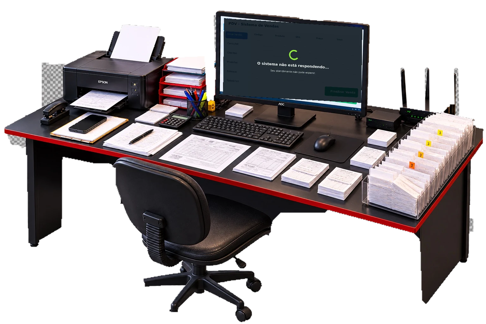
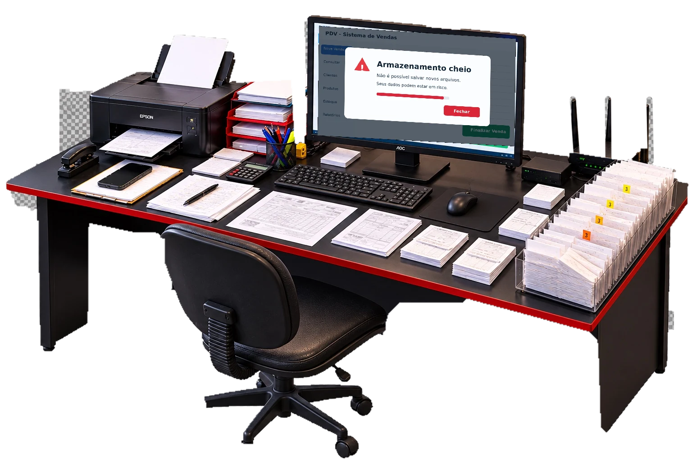

01 / O COTIDIANO
Seu comércio não pode parar.
Por trás de cada venda, existe uma operação que precisa funcionar.


01 / O COTIDIANO
Por trás de cada venda, existe uma operação que precisa funcionar.
RICHARD TI
Redes, suporte técnico, proteção de dados e software para ajudar sua empresa a trabalhar com menos interrupções e mais controle.
Falar sobre meu comércio ↗Atendimento em São Miguel do Araguaia e região.